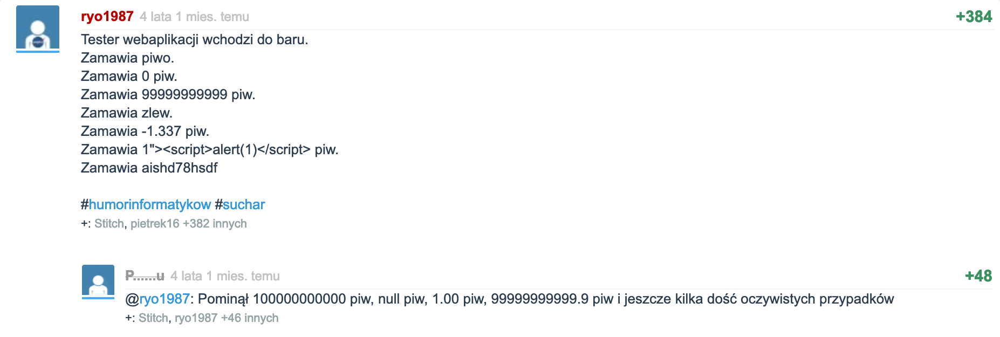
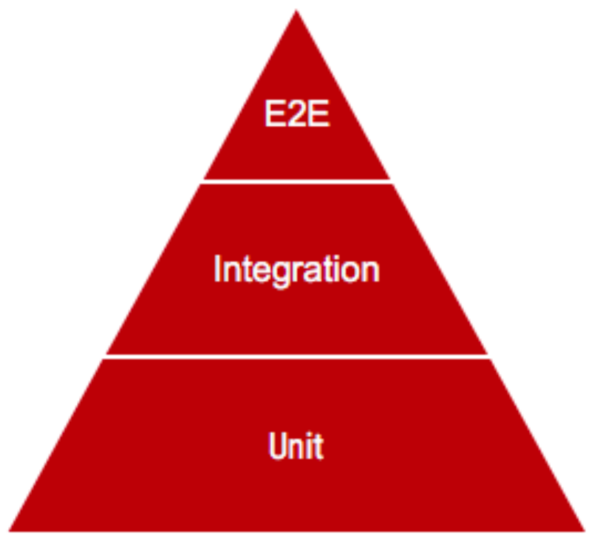

Testy w JS
Jest, TDD, E2E
Plan zajęć
- O co chodzi?
- Jest
- TDD
- Testy integracyjne, E2E
Testy?
- Kod, który odpala nasz kod
- Przy odpalaniu - sprawdzenia
- Jak sprawdzać?
- Bierzemy np. pojedynczą funkcję, komponent
- Zawsze jest jakiś wsad (input) i jakaś zwrotka (output/result)
- Sprawdzamy, czy dla konkretnego wsadu (wejścia) mamy konkretną (spodziewaną) zwrotkę (wyjście)
Co testować?
A zatem
const sq = a => a**21,0,2,-3,100null,undefined,NaN1.1Number.MAX_SAFE_INTEGER,Number.MAX_VALUE,Number.NEGATIVE_INFINITY'foo'
Ćwiczenie 1
- Pobrać i odpalić zaczęty przykład
- Zwrócić uwagę na komendę
npm test
- Zwrócić uwagę na komendę
- Rozbudować o kolejne przypadki testowe (np. wcześniej wymienione)
- Zepsuć jakiś test. Jaki jest wynik?
- Jak można ulepszyć testy? Nie łamać DRY itd.
Komu to potrzebne? A po co?
- Wykrycie błędów w obecnym kodzie
- Zabezpieczenie się na przyszłe błędy - "utrwalenie" kontraktów
- Łatwiejszy refactoring
- Poczucie bezpieczeństwa :)
Narzędzia
- Runner
- Framework
- "Konsolowa" przeglądarka (testy e2e)
- Asercje
- Mockowanie
Piramida

Plan zajęć
- O co chodzi?
- Jest
- TDD
- Testy integracyjne, E2E
Co i jak
- jestjs.io/
- Zrobione przez facebooka, musi być popularne
- Runner, framework, asercje, mockowanie, JSDOM
- Od razu w create-react-app
- Snapshot testing - porównywanie wynikowych HTML-i
npm i -D jest"test": "jest"
Ćwiczenie 2
Plan zajęć
- O co chodzi?
- Jest
- TDD
- Testy integracyjne, E2E
A gdyby tak...
- Pisanie testów ZANIM napiszemy kod
- Test-Driven Development
- Bardzo wysokie pokrycie testami
- Duża pewność odnośnie jakości kodu
- Na każdym kroku piszemy tylko niezbędne minimum, żeby nasze testy przeszły
Ćwiczenie 3
- TDD Kata, Jest
- Kalkulator dodający liczby zapisane tekstem
- Istnieje funkcja add
- Napisać funkcję
- Funkcja zwraca liczbę (domyślnie 0)
- Napisać zwracanie 0
- Funkcja dostaje tekst, inaczej rzuca wyjątek
- Dopisać sprawdzenie
- Zwraca liczbę podaną w stringu (np.
1dla'1') - Funkcja zwraca sumę liczb, wymienionych po przecinku (np.
9dla'3,6')
Plan zajęć
- O co chodzi?
- Jest
- TDD
- Testy integracyjne, E2E
E2E
- End-to-end
- Symulujemy przeglądarkę, NIE mockujemy
- Nasz program w działaniu
- Często używa się leciutkich przeglądarek (Chromium)
- Happy path
Integracyjne
- NIE mockujemy
- Możemy testować np. kilka reactowych komponentów i ich współpracę
- Skupienie się na najważniejszych fragmentach
- Wykorzystanie np. JSDOM
React Testing Library
- testing-library.com/react
- Współpracuje z Jestem
-
const {getByLabelText} = render( <MyComponent props1={value} /> ); expect(getByLabelText('text')).toBeTruthy(); - Dostępne różne getBy
Ćwiczenie 4
- Pobrać i odpalić zaczęty przykład
- Co się zmieniło od ostatniego razu?
- Powalczyć, pozmieniać